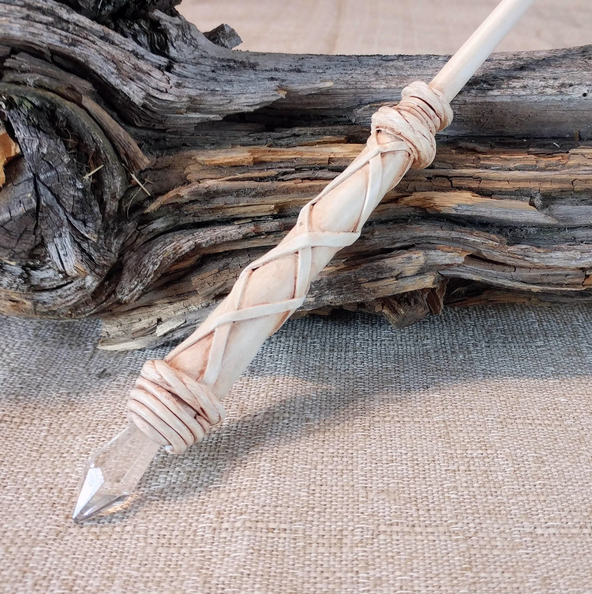
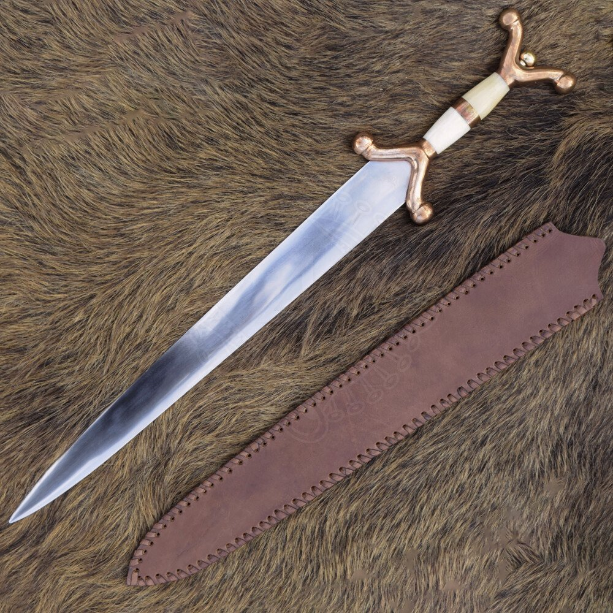

🎁 Buying this as a gift? Give the gift of belonging to an ancient Irish clan — signed by the Chief, posted worldwide.
The sacred objects of Clan Ó Comáin
An Slat Bhán — Rod of Sovereignty
The White Rod — An Slat Bhán — is the most ancient and most sacred of the clan's physical objects of authority. In the Gaelic chieftainly tradition, the rod of sovereignty was one of the defining instruments of inauguration, passed to a newly consecrated chief as a physical embodiment of the transfer of power and the blessing of the land.
"The rod was not merely a symbol — it was the physical meeting point between the chief, his people, and the land itself. To hold it was to accept its obligations."
The clan's White Rod is made from white wood wrapped in hand-tooled leather cord in a traditional Celtic lattice pattern, tipped with a faceted crystal point. The crystal in Celtic and early Irish tradition was associated with clarity of vision, spiritual authority, and the power of the otherworld — qualities expected of a chief who must see truly and judge justly on behalf of his people.
The rod is held by the Chief of Ó Comáin and carried at formal clan ceremonies, inaugurations and gatherings. It is presented at the consecration of the Chief, symbolising the continuity of the ancient chieftainly tradition of the Ó Comáin from Cahercommane to Newhall.

Under Brehon law, the inauguration of a Gaelic chief was not merely a political event — it was a sacred rite, conducted at the clan's inauguration site by the assembled derbhfine. At Cahercommane, the great triple-ring stone fort of the Burren, the Chiefs of Ó Comáin were consecrated in a ceremony that bound the new chief to the land, the ancestors, and the living clan.
The inauguration ceremony in the Gaelic tradition typically involved several elements: the assembly of the derbhfine at the sacred inauguration site; the presentation of the rod of sovereignty by the chief's designated officer; the three ritual circuits of the fort or mound; and the proclamation of the new chief's name, genealogy and obligations by the Seanchaí — the hereditary historian and storyteller of the clan.
The rod was presented at the moment of consecration — placed in the hands of the new Chief by the outgoing chief or the senior officer of the derbhfine — signifying the formal transfer of the authority of the clan. To receive the rod was to receive the trust and sovereignty of the people.
The crystal tip of the Ó Comáin White Rod carries additional significance rooted in the pre-Christian sacred landscape of the Burren. Quartz and crystal were placed at the entrances of sacred sites across Ireland — most famously at the entrance to Newgrange — as objects believed to channel light, power and the presence of the otherworld. A crystal-tipped rod in the hands of a chief is therefore not merely decorative: it is a physical connection to the deepest spiritual traditions of the Gaelic world.
Today, the White Rod is carried by the Chief of Ó Comáin at formal clan occasions — at the clan's recognition by Clans of Ireland, at clan gatherings at Newhall and Cahercommane, and at any ceremony requiring the formal presence and authority of the clan. It will be presented at each future inauguration of a Chief of Ó Comáin, as the derbhfine gathers to select the most able-bodied to lead the clan.

Claidheamh Ceilteach — the Celtic blade
In Celtic culture, the sword was never merely a weapon of war — it held a sacred place in ritual and ceremony, carrying the spiritual authority of the clan and the honour of the chief it served. The Gaélica Sword in particular occupied a central role in rites of passage, symbolising the transition of a young man into a warrior, and the obligation of the warrior to protect and serve the community that consecrated him.
The creation of the blade was viewed as a sacred act — an exhibition of the smith's power to control raw nature and refine it into an object of both function and profound artistic merit. Even the water used to quench the blade was considered to carry magical and curative properties.
"The Celtic sword was a symbol of rank and honour — its creation magical, its possession a mark of the community's power, its sacrifice by water a rite older than memory."
The clan's ceremonial sword echoes the legendary Caladbolg — borne by King Fergus of Ulster in the ancient Irish saga Táin bó Cúailnge — from which the Arthurian legend of Excalibur is ultimately derived. It is carried by the clan's Marshall and Standard Bearer at formal gatherings, processions and ceremonies, representing the protective authority of the clan and the duty of the warrior class to honour the Chief and defend the clan's people.
The sword is carried by Michael Commane of Cape Cod, Marshall and Standard Bearer of Clan Ó Comáin, at all formal clan occasions. It is presented at the inauguration of each Chief as a symbol of the clan's strength and the protective covenant between the Chief and his people.
The White Rod is the first of the clan's formal regalia. As the clan continues its revival, further objects of authority and ceremony will be added to the collection — the clan banner, the seal of the Chief, and other instruments of the clan's formal life.
Each relic will be commissioned or consecrated in accordance with the ancient traditions of the Gaelic world, grounded in the scholarship that has guided the clan's revival. Members of the clan wishing to contribute to the creation of the clan's regalia are invited to contact the Chief directly.
Contact the Chief